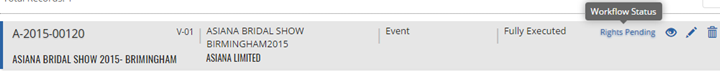
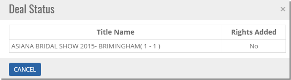


	<section>
		<article>
			<h2>Workflow Status<span></span></h2>
			<div>
				<p></p>
				<p>Rights Pending - This Workflow status will be display on Acquisition Deal List page when users has not added rights for the deal.</p>

				<div class="triangle-border top">				
					
				</div>

				<p>Click on Work Flow Status Hyperlink, a Pop-up will be displayed as follows</p>

				<div class="triangle-border top">				
					
				</div>

				<p>When Rights and Cost is added for the deal, the workflow status will be 'Details Added' and it will be available to send for approval.</p>
			</div>
		</article>
	</section>